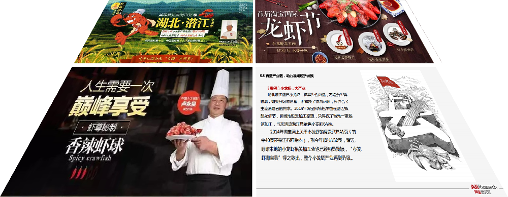

两届小龙虾网购节
2014年，我们与潜江市政府、龙虾企业、淘宝网市场部合作，策划了“首届潜江小龙虾网购节”专场活动
本次活动以宣传潜江“虾稻共作”有机养殖方式为基础，
以“中国顶级小龙虾盛宴”为准则，由政府背书出具出口级的苛刻品质认证，
携潜江最富盛名的出口龙头企业“莱克”，共同推出了最具代表的十种小龙虾菜品，让全网小龙虾消费者共享盛宴。
活动7天时间直接销售潜江小龙虾14740单，直接引导成交GMV达314.7万元，创2014熟食类活动新高。
2015年“淘宝首届际龙虾节”，来自湖北潜江的近六万斤小龙虾被消费者抢购一空。
得益于首届小龙虾网购节，我们将小龙虾打造成互联网热门类目，同期数据显示，在“淘宝首届国际龙虾节”期间，
小龙虾的销售额相对往年有较大幅度提高。而销售小龙虾的卖家如雨后春笋般出现，小龙虾产品在互联网已开始呈现爆发式增长态势。
